View our diverse selection of beef, pork, poultry, and specialty meats.
Menu
Providing all-natural meats since
1962

Isn’t it great how the little mom-and-pop shops always get 100% five-star reviews? These guys are the real economy builders. They figured out the secret in business. You just treat people nicely. This place is been around for years. I remember going here is a kid. They got a huge Sam’s Club and Meijer meat market right here in town and they still make it because they’re such a great place. Highly recommended.
Eric Kowalewski
The meat is always high quality and the staff is friendly and helpful : ) We tell everyone we know about this place!
Sarah Jones
Some of the best meats around! We always stop whenever we have time. My dad always gets the landjägers. They have common offerings, as well as some exotic meats. If you have questions, they are always willing to answer, or offer suggestions if you're just looking for something to try!
Christian Zummer
I'm the 3rd generation to have the pleasure of visiting Ted's and can't say enough about the service, the quality of the meats and the entire experience. Goody always remembers us by name and the whole family is remarkable. The Fischer Family thanks you :)
Karen Stallard
The folks and the meats at Ted's are of the same quality - all top shelf! You'll find only the best at Ted's, in meats and the other items they sell, as well as the service, which is the best I've experienced anywhere. :~}
Mark B